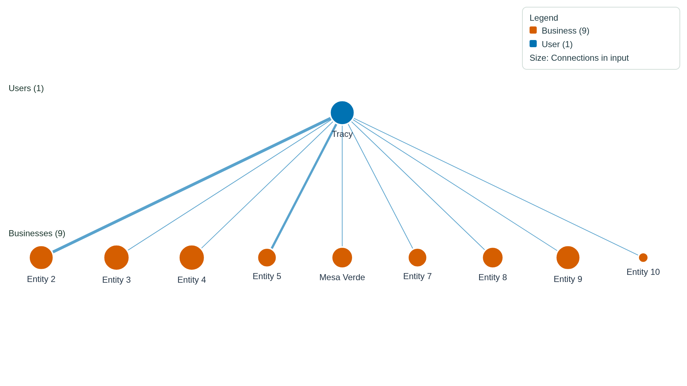

Found 33 maximal bicliques between Users and Businesses. The largest has 8 users × 4 businesses.
Validated

| Index | Left names | Right names | Left size | Right size |
|---|---|---|---|---|
| 1 | Tracy | Entity 2; Entity 3; Entity 4; Entity 5; Mesa Verde; Entity 7; Entity 8; Entity 9; Entity 10 | 1 | 9 |
| 2 | Tracy; Entity 12 | Entity 2; Entity 3; Entity 4; Entity 5; Entity 7; Entity 9; Entity 10 | 2 | 7 |
| 3 | Tracy; Entity 14 | Entity 2; Entity 3; Entity 4; Mesa Verde; Entity 8; Entity 9; Entity 10 | 2 | 7 |
| 4 | Tracy; Entity 12; Entity 14 | Entity 2; Entity 3; Entity 4; Entity 9; Entity 10 | 3 | 5 |
| 5 | Tracy; Entity 11 | Entity 2; Entity 3; Entity 4; Entity 5; Mesa Verde; Entity 7; Entity 8; Entity 9 | 2 | 8 |
| 6 | Tracy; Entity 11; Entity 14; Entity 17 | Entity 2; Entity 3; Entity 4; Mesa Verde; Entity 8; Entity 9 | 4 | 6 |
| 7 | Tracy; Entity 11; Entity 18 | Entity 2; Entity 3; Entity 4; Entity 5; Mesa Verde; Entity 9 | 3 | 6 |
| 8 | Tracy; Entity 11; Entity 14; Entity 17; Entity 18 | Entity 2; Entity 3; Entity 4; Mesa Verde; Entity 9 | 5 | 5 |
| 9 | Tracy; Entity 11; Entity 15 | Entity 2; Entity 3; Entity 4; Entity 5; Entity 7; Entity 8; Entity 9 | 3 | 7 |
| 10 | Tracy; Entity 11; Entity 15; Entity 16 | Entity 2; Entity 3; Entity 4; Entity 7; Entity 8; Entity 9 | 4 | 6 |
| 11 | Tracy; Entity 11; Entity 14; Entity 15; Entity 16; Entity 17 | Entity 2; Entity 3; Entity 4; Entity 8; Entity 9 | 6 | 5 |
| 12 | Tracy; Entity 11; Entity 12; Entity 15 | Entity 2; Entity 3; Entity 4; Entity 5; Entity 7; Entity 9 | 4 | 6 |
| 13 | Tracy; Entity 11; Entity 12; Entity 15; Entity 18 | Entity 2; Entity 3; Entity 4; Entity 5; Entity 9 | 5 | 5 |
| 14 | Tracy; Entity 11; Entity 12; Entity 15; Entity 16 | Entity 2; Entity 3; Entity 4; Entity 7; Entity 9 | 5 | 5 |
| 15 | Tracy; Entity 11; Entity 12; Entity 14; Entity 15; Entity 16; Entity 17; Entity 18 | Entity 2; Entity 3; Entity 4; Entity 9 | 8 | 4 |
| 16 | Tracy; Entity 11; Entity 14; Entity 17; Entity 19 | Entity 2; Entity 3; Entity 4; Mesa Verde; Entity 8 | 5 | 5 |
| 17 | Tracy; Entity 11; Entity 14; Entity 17; Entity 18; Entity 19 | Entity 2; Entity 3; Entity 4; Mesa Verde | 6 | 4 |
| 18 | Tracy; Entity 11; Entity 14; Entity 15; Entity 16; Entity 17; Entity 19 | Entity 2; Entity 3; Entity 4; Entity 8 | 7 | 4 |
| 19 | Tracy; Entity 11; Entity 12; Entity 14; Entity 15; Entity 16; Entity 17; Entity 18; Entity 19 | Entity 2; Entity 3; Entity 4 | 9 | 3 |
| 20 | Tracy; Entity 13 | Entity 3; Entity 4; Entity 5; Mesa Verde; Entity 7; Entity 9; Entity 10 | 2 | 7 |
| 21 | Tracy; Entity 12; Entity 13 | Entity 3; Entity 4; Entity 5; Entity 7; Entity 9; Entity 10 | 3 | 6 |
| 22 | Tracy; Entity 13; Entity 14 | Entity 3; Entity 4; Mesa Verde; Entity 9; Entity 10 | 3 | 5 |
| 23 | Tracy; Entity 12; Entity 13; Entity 14 | Entity 3; Entity 4; Entity 9; Entity 10 | 4 | 4 |
| 24 | Tracy; Entity 11; Entity 13 | Entity 3; Entity 4; Entity 5; Mesa Verde; Entity 7; Entity 9 | 3 | 6 |
| 25 | Tracy; Entity 11; Entity 13; Entity 18 | Entity 3; Entity 4; Entity 5; Mesa Verde; Entity 9 | 4 | 5 |
| 26 | Tracy; Entity 11; Entity 13; Entity 14; Entity 17; Entity 18 | Entity 3; Entity 4; Mesa Verde; Entity 9 | 6 | 4 |
| 27 | Tracy; Entity 11; Entity 12; Entity 13; Entity 15 | Entity 3; Entity 4; Entity 5; Entity 7; Entity 9 | 5 | 5 |
| 28 | Tracy; Entity 11; Entity 12; Entity 13; Entity 15; Entity 18 | Entity 3; Entity 4; Entity 5; Entity 9 | 6 | 4 |
| 29 | Tracy; Entity 11; Entity 12; Entity 13; Entity 15; Entity 16 | Entity 3; Entity 4; Entity 7; Entity 9 | 6 | 4 |
| 30 | Tracy; Entity 11; Entity 12; Entity 13; Entity 14; Entity 15; Entity 16; Entity 17; Entity 18 | Entity 3; Entity 4; Entity 9 | 9 | 3 |
| 31 | Tracy; Entity 11; Entity 13; Entity 14; Entity 17; Entity 18; Entity 19 | Entity 3; Entity 4; Mesa Verde | 7 | 3 |
| 32 | Tracy; Entity 11; Entity 12; Entity 13; Entity 14; Entity 15; Entity 16; Entity 17; Entity 18; Entity 19 | Entity 3; Entity 4 | 10 | 2 |
| 33 | Entity 19 | Entity 2; Entity 3; Entity 4; Mesa Verde; Entity 8; Entity 20 | 1 | 6 |
Full retained tables:
Use the matching verified GraphMine installation and native build recorded in manifest.json. Set GRAPHMINE_REPOSITORY_ROOT and the native library paths for that installation. Inputs are stored once in inputs.json; request.json references their SHA-256. From the extracted report folder:
import hashlib, json, subprocess, sys
from pathlib import Path
request = json.loads(Path('request.json').read_text())
raw = Path(request.pop('inputs_file')).read_bytes()
assert hashlib.sha256(raw).hexdigest() == request.pop('inputs_sha256')
request['inputs'] = json.loads(raw)
request['plan'] = json.loads(Path(request.pop('plan_file')).read_text())
subprocess.run([sys.executable, '-m', 'graphmine.worker'],
input=json.dumps(request).encode(), check=True)
The worker revalidates the workflow and execution evidence. A changed environment can require a new validation; randomized methods may differ.
{
"version": 1,
"device": "cpu",
"steps": [
{
"id": "analysis",
"problem": "maximal-bicliques",
"input": {
"input": "main"
},
"parameters": {
"left_partition": [
"entity-0",
"entity-10",
"entity-11",
"entity-12",
"entity-13",
"entity-14",
"entity-15",
"entity-16",
"entity-17",
"entity-18"
],
"right_partition": [
"entity-1",
"entity-2",
"entity-3",
"entity-4",
"entity-5",
"entity-6",
"entity-7",
"entity-8",
"entity-9",
"entity-19"
]
},
"bindings": {},
"device": "cpu",
"budget": {
"max_output_items": null,
"max_candidates": null,
"timeout_seconds": null
}
}
]
}{
"format": "graphmine-report-v1",
"workflow_id": "ca7235d3-117b-447e-8877-325dd1a2dfba",
"revision": 1,
"status": "completed",
"created_at": "2026-11-25T07:59:11.346818+00:00",
"finished_at": null,
"workflow_hash": "5241360f044e4ccaf5b6dedc7c5309434ff45f2a5d2252d0148e8ae81d12103b",
"environment": {
"native_abi": 1,
"native_library_sha256": "28cd6cfb86dc84c43e661165fa1c1ee62c253df2da44251125bb43d98fb78229",
"wrapper_sha256": "de60f03ff4fe73f543c6ef18af68140967e3705aaddda414a3d3e954b6bd3089",
"python": "3.12.3 (main, Aug 31 2026, 10:18:26) [GCC 13.3.0]"
},
"implementation_sha256": "62e49f43423d2ad5937d2a8c182f3e68128cd61782d50a04d1eef383e25d6a66",
"input_provenance": {
"main": {
"file_id": "file_11a22f6e3fcf4d7cab5abe23c2c802b0",
"sha256": "9adbe80cd62c7ad80e36a1e200c7acaa9a000fb5ac1b229f690b2e63eed17afb",
"file_snapshot": {
"name": "Yelp.json",
"kind": "graph",
"created_at": "2026-11-25T07:59:05.939065+00:00",
"size_bytes": 7869,
"graph": {
"directed": false,
"vertex_count": 20,
"edge_count": 69
}
}
}
},
"input_fingerprints": {
"main": {
"kind": "graph",
"fingerprint": "0e65d17e7afca23e8bb4f098dc500a17498c01f933bc096d040e70e33b29be7f"
}
},
"csv_text_formula_escaped": true,
"csv_note": "JSON artifacts preserve exact identifier types, nested data and precision. CSV is a spreadsheet-safe view.",
"outputs": {
"tables/1-analysis-bicliques.csv": {
"step": "analysis",
"port": "bicliques",
"type": "bipartite_groups",
"complete": true
}
},
"primary_output": {
"step": "analysis",
"port": "bicliques"
},
"rules_applied": [
"profile_bipartite",
"bipartite_items",
"typed_vertices",
"redundant_type_shape_removed"
]
}